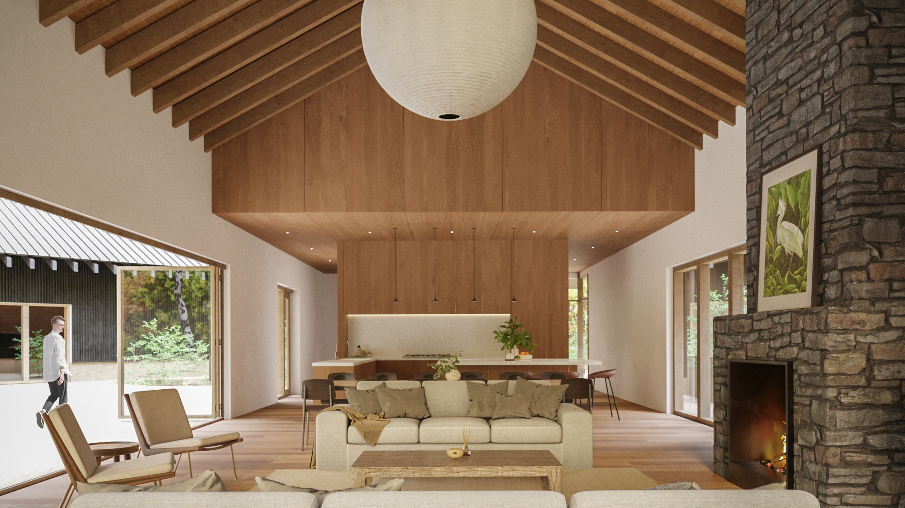
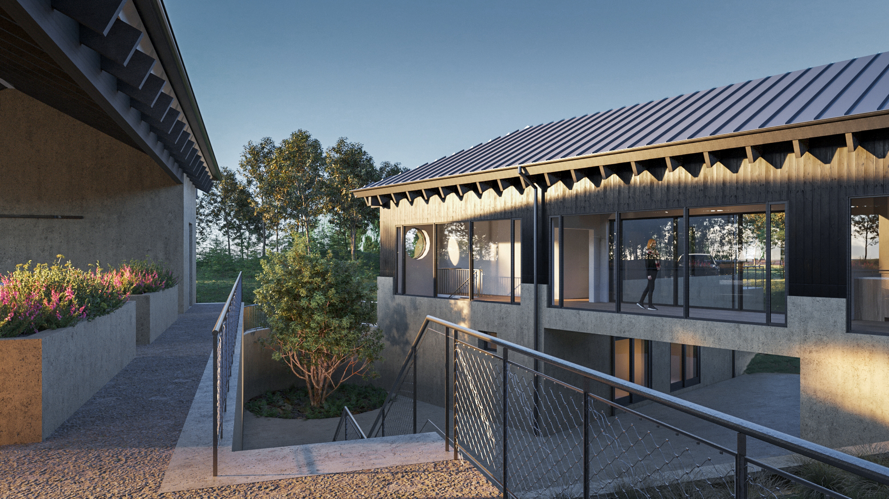
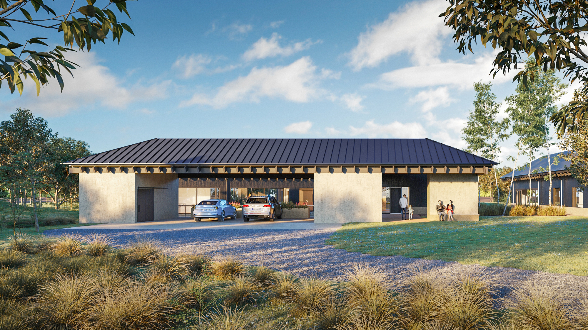
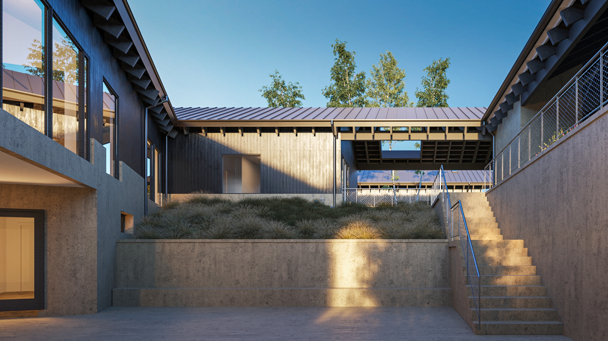
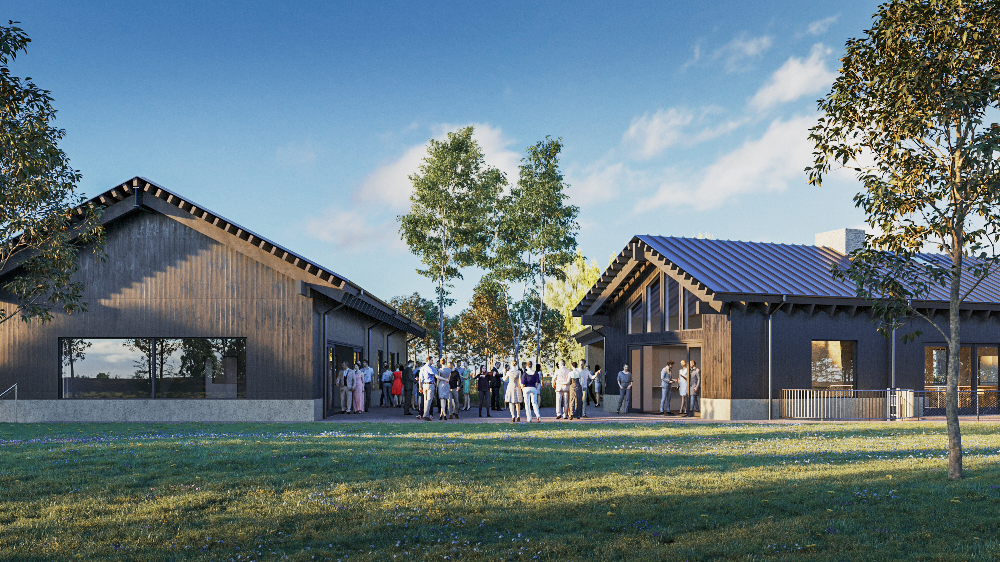
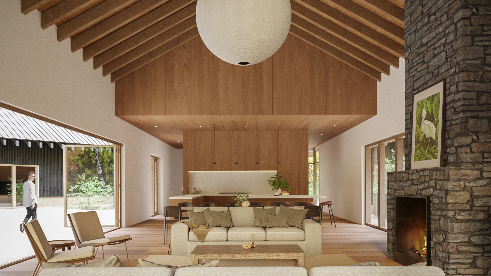
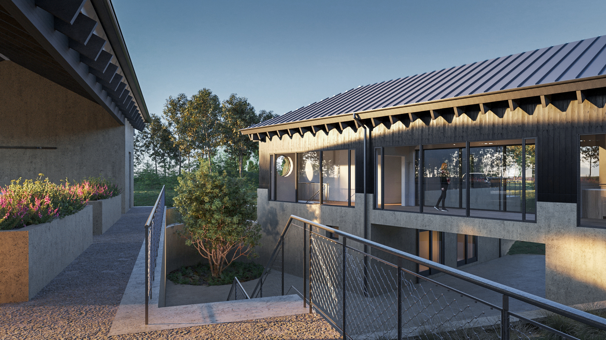
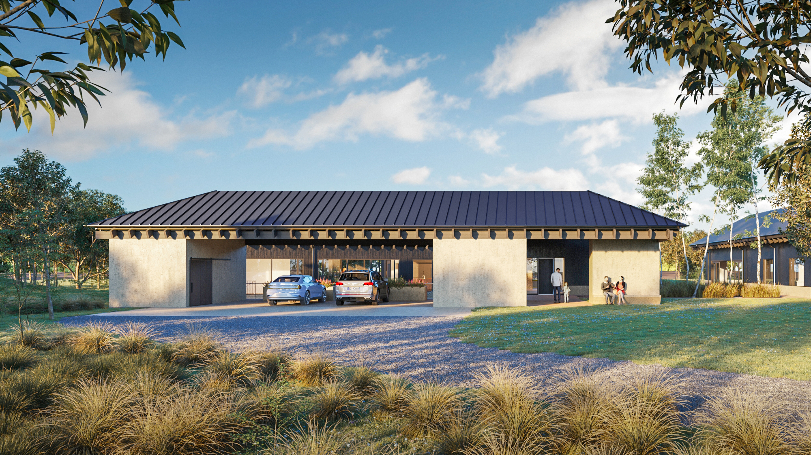
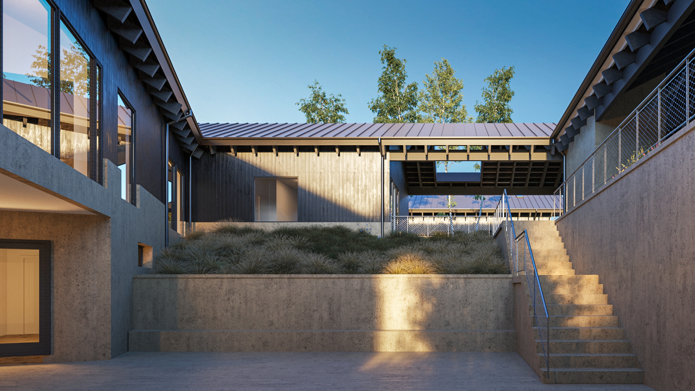
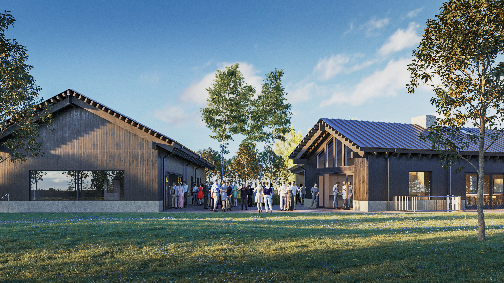

PROJECT:
Music Retreat
STATUS:
Under Construction
LOCATION:
Sardinia, Ohio
Music Retreat is a 6,000sf retreat and music production facility in southeast
Ohio. Inspired by the organic growth of a farmstead, our proposal envisions
a fragmentation of the primary building into smaller, interconnected elements.
Responding to the client’s programmatic requirements of play, live, and sleep,
as well as maximizing views of the lake for certain programs, these distinct
volumes establish a dialogue with each other and the natural surroundings.
The smaller volumes harmoniously blend with the landscape, allowing nature to
seamlessly integrate into the heart of the building, paying homage to the
traditional landscapes and agricultural architecture of Brown County.
By carefully balancing the autonomy of each program and establishing
a strong connection with the landscape, the design strives to create
a dynamic and engaging living environment that celebrates the diverse
activities and functions within the house while fostering a strong
relationship with the surrounding context.
Team members involved include Federica von Euw, Andrew Tetrault,
Donovan Staab, and Daniel O'neill.
Credits: Schaefer (Structural Engineer), Joy Mullappally (Visualization)